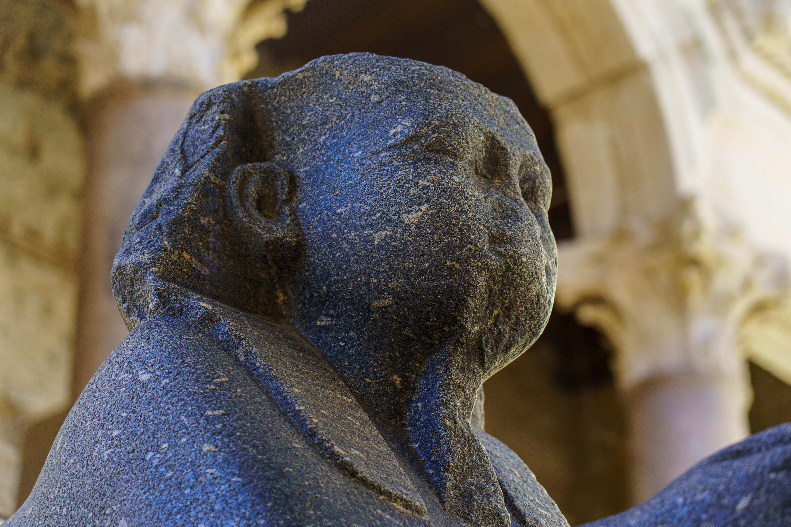
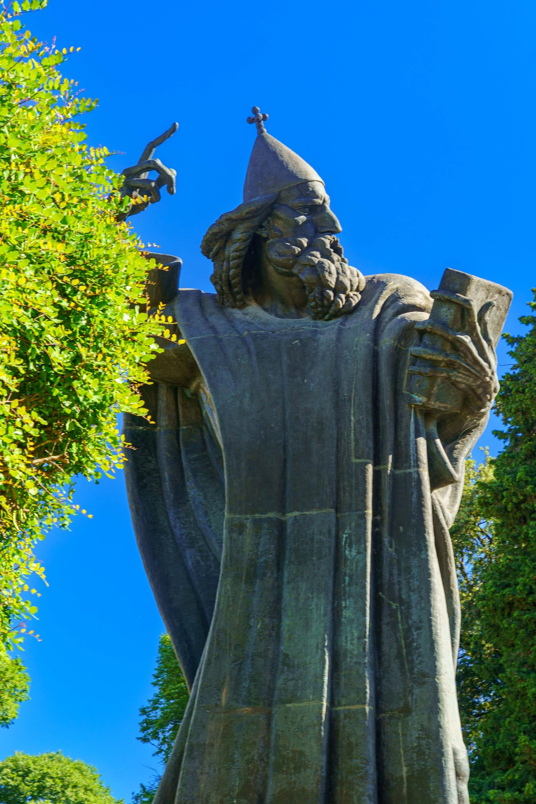
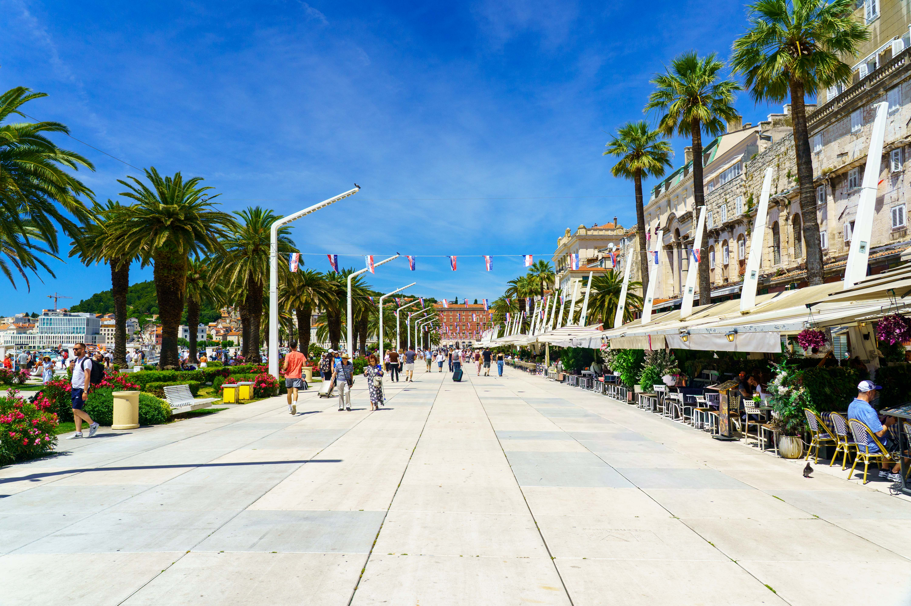
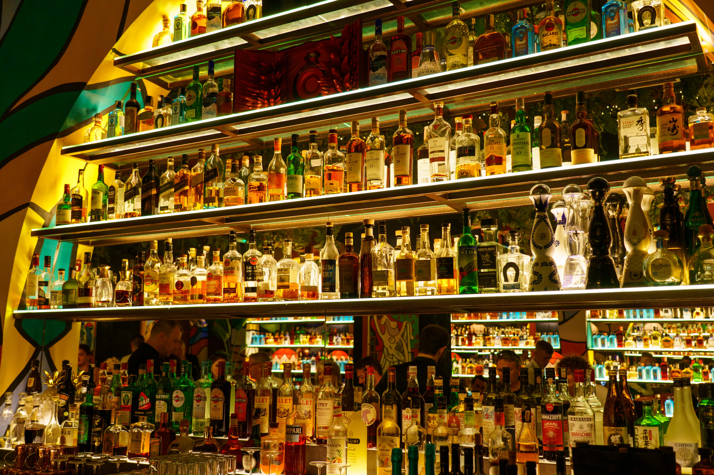
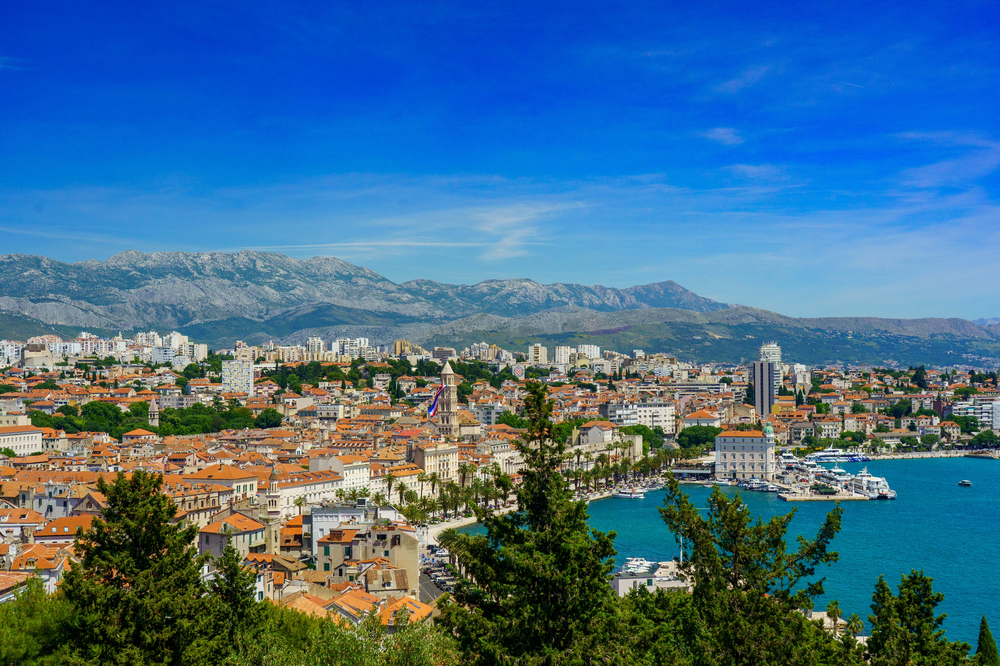
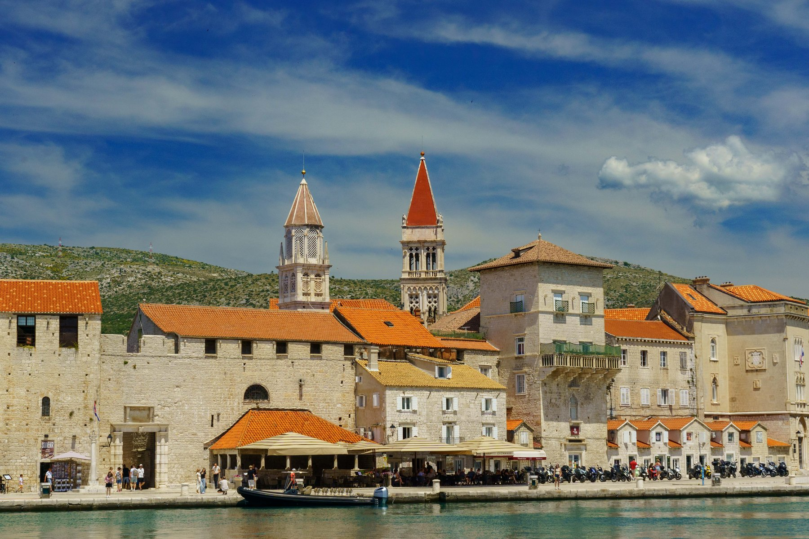
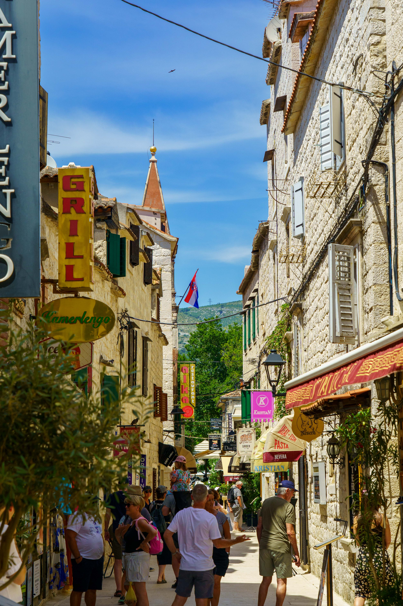
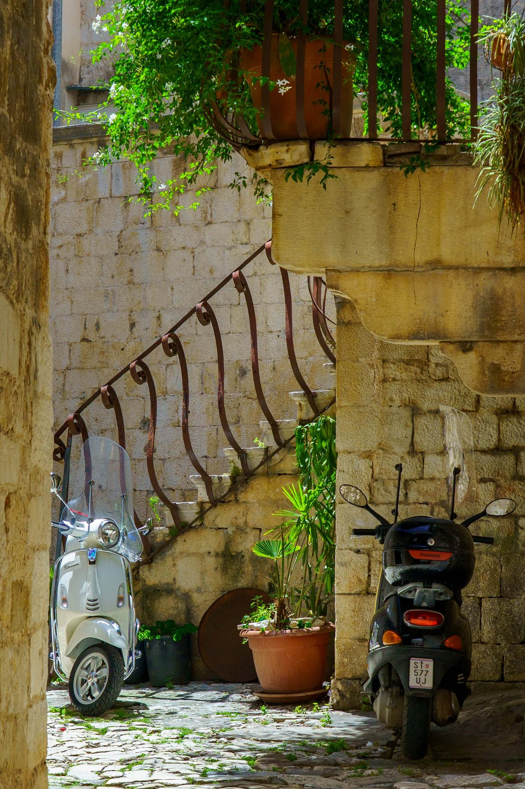

Split and Trogir
Split is built literally inside a Roman emperor's retirement palace — Diocletian's Palace isn't a museum you visit, it's the living, breathing core of the city, full of apartments, shops, and restaurants tucked into 1,700-year-old walls. The bell tower of St. Domnius Cathedral rises above it all, the Peristyle courtyard still holds its ancient sphinx, and the Riva promenade — lined with palms and packed with cafés — is where the whole city seems to gather each evening. A short walk up Marjan Hill gives the payoff view: red rooftops, turquoise harbor, and the Dinaric mountains as a backdrop. Just twenty minutes down the coast, Trogir is Split's smaller, quieter cousin — a UNESCO-listed medieval town squeezed onto its own tiny island, connected by bridges and wrapped in a maze of stone streets, bell towers, and waterfront cafés. Scooters lean in cool stone archways, laundry lines cross narrow lanes, and the harbor view of Trogir's twin towers from the water is one of the coast's most photographed. Together, the two towns are a study in contrast: Split's Roman grandeur and modern bustle against Trogir's compact, sleepy charm.







